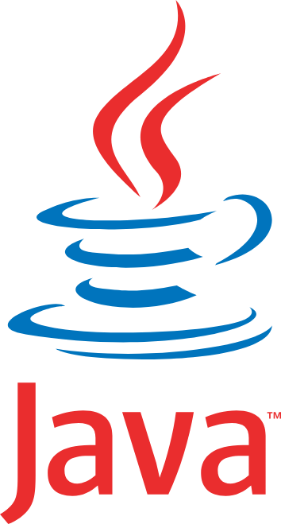
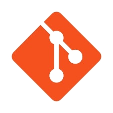

Première version (Java)
Base de l'application de gestion avec création, modification et consultation des principales entités métier.
Ce projet vise à développer une application en JAVA et WEB dédiée à la gestion et au suivi de travaux. Elle permet de centraliser les projets, de suivre l'avancement des chantiers et de faciliter la coordination entre les différents utilisateurs, tels que les propriétaires, les inspecteurs et les entrepreneurs. Chaque utilisateur dispose d'un espace adapté à son rôle, lui permettant d'accéder aux informations et fonctionnalités qui le concernent. Le projet comprend également un espace administrateur et un espace gestionnaire, offrant un contrôle global sur l'application, la gestion des utilisateurs, des projets et des données associées.
Base de l'application de gestion avec création, modification et consultation des principales entités métier.
Ajout du suivi des chantiers, des inspections terrain et d'une interface web mobile pour l'inspecteur.
Mise en place de la communication automatique des entrepreneurs selon des critères géographiques.
Création d'un espace entrepreneur web pour consulter les demandes et envoyer des propositions sécurisées.
Développement d'un outil de comparaison des devis pour aider le gestionnaire à choisir la proposition la plus adaptée selon plusieurs critères.


La prise en main de GitHub a nécessité une adaptation, notamment pour organiser le dépôt, gérer les branches et assurer un suivi clair des versions du projet. Il a fallu veiller à la cohérence du code et à la compréhension de l'historique des modifications.
Le projet a été développé par versions successives, ce qui demandait une bonne anticipation afin d'éviter les régressions lors de l'ajout de nouvelles fonctionnalités.
La modélisation des données a représenté un enjeu important afin de garantir la cohérence des données et d'assurer de bonnes performances lors des requêtes.
La mise en place de profils distincts (gestionnaire, inspecteur, entrepreneur, propriétaire) a impliqué une réflexion approfondie sur les autorisations et les accès aux fonctionnalités selon chaque rôle.
Cette partie regroupe l'interface de gestion historique du projet : administration, utilisateurs, biens, chantiers, catégories et prestations.
Cette partie met en avant l'interface web/mobile ajoutée pour le suivi terrain : connexion, consultation des chantiers et accès aux documents du dossier.
Ce projet de gestion de chantiers m'a permis de développer une application complète en Java et web, intégrant plusieurs profils utilisateurs et des fonctionnalités évolutives. Le travail par versions successives m'a aidé à mieux comprendre l'architecture d'une application, la structuration des données et la gestion d'un projet informatique.
Les difficultés rencontrées, notamment avec GitHub, la coordination des technologies et la conception de la base de données, ont renforcé ma rigueur et mon autonomie. Ce projet m'a permis de consolider mes compétences techniques et de mieux me préparer aux exigences du monde professionnel.